Free to forkNo licence and no copyright claim: build this game under your own name, or lift one idea from it. Why?
Game overview
Titanium Punk Orphans is a turn-based artillery game in the tradition of Worms: destructible terrain, a ridiculous arsenal, and one shot at a time. The worms are punk kids in scrap mecha, and they can't be killed.
An alien empire wiped out the grown-ups. The kids survived, found their parents' military hardware, read every manual, welded three bazookas together, and went on the offensive. Their enemy is huge, heavily armed, and run on fear and corruption so badly that nothing works properly.
Under the cartoon is a different structure from Worms. Battles are mostly assaults on fortified positions rather than duels between equal teams. Mecha hop instead of crawl, three actions a turn. Damage builds up knockback, as in Super Smash Bros., until a machine flies off the map. And the squad is persistent, as in XCOM, with kids who get tired, hurt, older and better.
Target audience
Worms and Scorched Earth fans who love blowing holes in the landscape with absurd weapons, but find one equal-team elimination match much like the next. XCOM fans who love a persistent squad, without the grief of losing it.
They want explosive slapstick with real tactics underneath, and a gang of kids worth rooting for.
Mouse-driven, turn-based, and no turn timer: take as long as you like over every shot.
Game's purpose
Play and silliness: craters, chain reactions and machines flying off the screen yelling.
Power and freedom: the underdogs taking their world back from a bully.
Belonging: a rag-tag found family that grows up over the campaign.
Growth: reading terrain and fortifications and cracking them open.
It deliberately avoids draining safety (the kids can't die, only get hurt or tired) and rest (no timers, ever).
Core concept
Worms is a standalone match between equal teams, won by whoever wipes out the other first. It's great for a party, and samey alone.
Here it's an asymmetric assault: a small squad against bunkers, turret networks and fortresses, inside a campaign that frees a region and then the next.
Knockback replaces hit points, so every hit moves things; hops replace crawling, so every turn is a small plan; and the squad carries on from battle to battle.
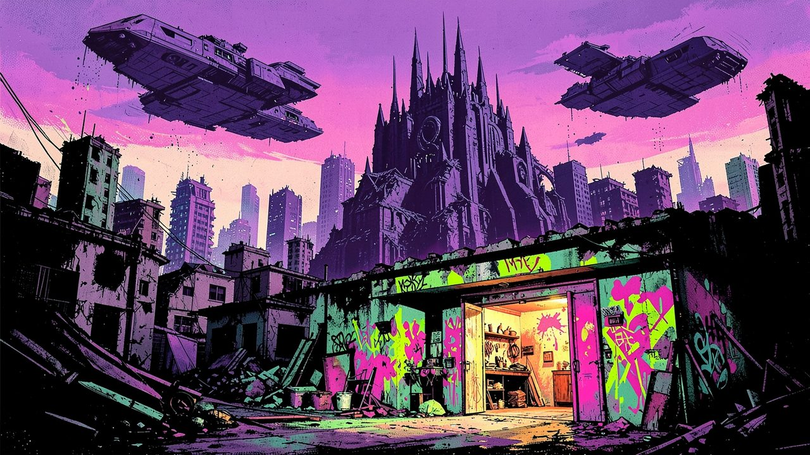
"The invaders killed the grown-ups. They couldn't kill the kids."
Lore and story
The day the grown-ups died
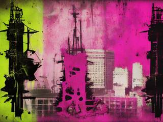
The Hegemony came from the stars the way it always does: greedy, expansionist, and bigger than anything it meets. Its soldiers are a cloned mix of blue, green and purple aliens, brutish giants, cyborg hulks and haughty, prissy officers, bred without childhoods and without children. It took the world in a week and killed nearly every adult on it.
It couldn't kill the children. Nobody knows why. Bullets bounce, blasts knock them flat and they get up again; they bruise, they get tired, they can be knocked out and dragged off to a cell, but they can't die. The adults used to call it a mercy. The kids call it plot armor.
The Orphans
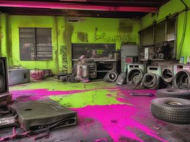
So the kids went into the bunkers and garages and found what their parents left: tanks, mecha, crates of weapons and the manuals for all of it. They read every page. Then they did what kids do with anything: painted it, spiked it, welded two of it together and taped a third on top.
Every kid stays invulnerable until their eighteenth birthday. After that they choose: retire into the jobs that keep the rebellion running, fixing mecha, running supplies, patching up the hurt, teaching the younger ones; or stay in the cockpit as a legend, sharper and stronger than any kid, and mortal.
The fight right now
The Hegemony holds the valley with a fortress, three turret nests and a grounded battleship. Its soldiers are miserable, its officers are stabbing each other in the back, and half its guns jam. The Orphans have four mecha, a war chest full of terrible ideas, and nothing to lose.
Controls and interface
It plays mostly with the mouse. On your turn you have three actions with one mecha: hop, shoot, use an ability, in any order and any mix. Valid landing spots light up when you hop, the way Advance Wars shows where a unit can move, with the arc drawn so you know exactly where you'll come down.
Move
Left click
Hop to a lit spot (one action)
Ctrl + click
Short hop, a third of an action
S + click
Crouch-hop into a slide, with brakes
Space
Mid-hop: rope, parachute or bungee (free)
Fight
Q
Weapon menu: the mecha's own and the war chest
Mouse, hold click
Aim; hold for power, release to fire
E
Ability menu
A
Anchor to the ground against knockback
Squad
Tab
Switch to another mecha (costs an action)
Enter
End the turn early
View
Wheel, right drag
Zoom and pan
Esc
Menu and save
The weapon and ability menus are big grids in the spirit of Worms 2 at its peak: every option on one screen, with what each one does to mecha and to terrain shown before you pick it.
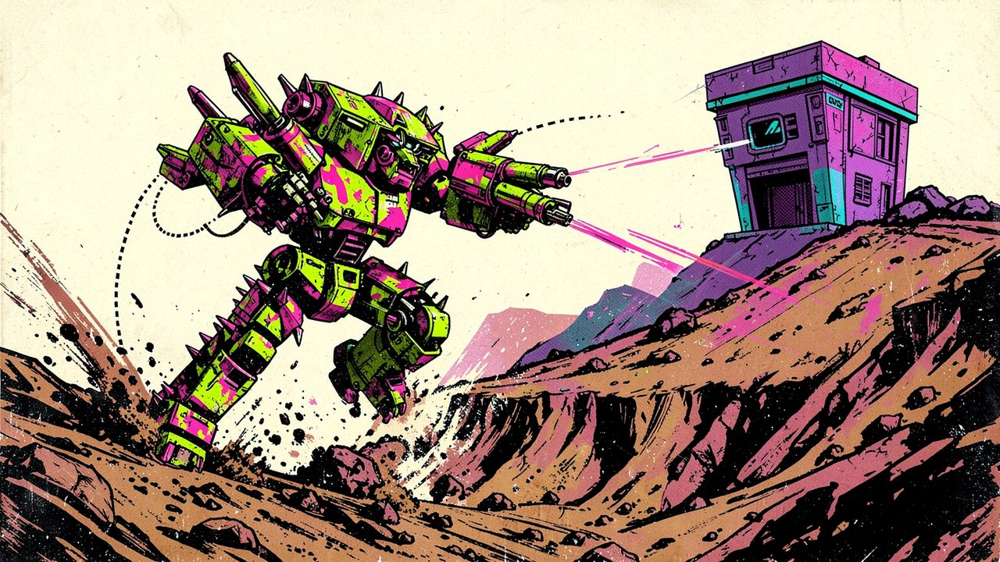
"Three actions a turn: hop, shoot, hop back. Or shoot, shoot, shoot."
Game layers
01 · Moment-to-moment
Hop, aim, boom
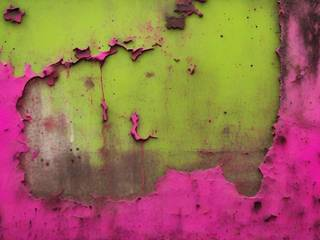
Look at the battlefield. Pick a mecha and spend three actions: hop up to a ledge, lob a cluster bomb into the turret nest, hop back behind the rock. Watch the terrain cave in and an enemy mech tumble down the slope. Then it's their turn, and they try the same on you.
02 · Low metagame
Liberating a region
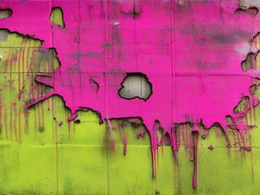
A campaign frees one region from the Hegemony: a generated map of occupied towns, turret lines, bunkerships and fortresses, each a battle. Weapons picked up in one battle can be used in the next, the hurt kids sit one out, and the region falls when its last stronghold does.
03 · High metagame
Taking the world back, then space
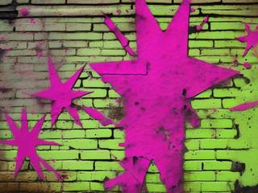
Beyond the region is the rest of the world, and beyond the world, the Hegemony's other conquests and the space monsters that roam between them. The Orphans keep going, planet after planet, into zero gravity and out among the stars.
Home is the workshop, and its wall is the record: every region freed gets tagged on it in spray paint, next to the names of the kids who grew up and retired, and the legends who fell.
04 · Practical game flow
A battle at a time
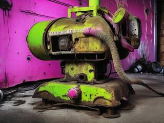
There are no timers on turns, so the pace is XCOM's or Advance Wars', but snappier, because only one mecha moves at a time. A battle takes twenty to forty minutes, and saves between turns. A region is a few evenings.
Game modes
There's one mode: the rebellion. Most battles are assaults on Hegemony positions, and some are straight mecha-against-mecha brawls in the old Worms style. It nests:
The rebellionEndless: region after region, world after world.
A regionOccupied towns, turret lines and fortresses: a few evenings.
A battleOne map, one objective: twenty to forty minutes.
A turnThree actions with one mecha: a minute or two.
Features and mechanics
The heart of it
Knockback, not hit points
Mecha don't crash and burn when their health runs out. As in Super Smash Bros., every hit makes a machine more vulnerable to knockback: a fresh mecha shrugs off a blast with a stagger, a battered one is sent flying across the map by the same blast. A machine is out of the battle when it's knocked off the edge of the map or into lava or acid, yelling all the way.
Its pilot is fine: a teleport tether snaps them back to safety the moment the mecha goes, as in Cryptark. It makes every hit matter, because every hit moves something, and it turns the terrain into part of every attack. A mecha can anchor itself to the ground against being knocked around, at the cost of being a sitting target.
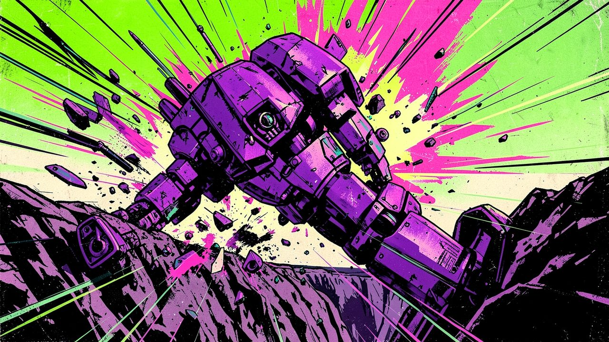
"Every hit makes a machine easier to knock flying, until one blast sends it off the edge of the map."
Instead of the crawl
Three actions a turn
Worms' worms crawl and jump on a timer. Here, borrowed from Reactorcore's Epic Toy Cool Combat rules, a mecha gets three actions and spends them however it likes:
Turn
What it's for
Hop, shoot, hop
Pop out of cover, fire, duck back
Shoot, shoot, shoot
Stand and unload on something that matters
Hop, hop, hop
Cross the map, or get out of trouble
Ability, hop, shoot
Set up overwatch or a shield first, then act
A hop can be split into three short hops for fine footwork, or turned into a braking slide. Mid-hop, a ninja rope, parachute or bungee can be fired for free, so a single hop can swing, glide or rebound across wrecked terrain. Some mecha can also hover and stay airborne until something concussive knocks them down.
The ground fights back
Terrain in layers
The terrain is a destructible bitmap, as in Worms, but not all of it is the same, as in Clonk:
Material
What it takes
Dirt
Anything blows a hole in it
Rock
Only explosives shatter it
Granite
Two explosive hits
Obsidian
Three explosive hits
Broken ground drops chunks that roll downhill and tumble with the blasts. Mines and fuel barrels lie around, some targets are buried and have to be dug out as in Cortex Command, and water is no longer an instant death: mecha float. Lava and acid are another matter.
Not a fair fight, on purpose
Fortresses to crack
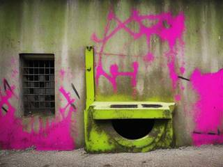
Most battles are a small squad against a fortified position: turret emplacements, bunkers, a grounded battleship bristling with guns, and Forts-style fortresses with armor, weak points, facilities and a reactor waiting to go up.
The enemy gets three actions a turn too, spent on one of its units or on one turret network: a sector's linked turrets count as a single unit and fire together. A big base has several networks, each its own unit. Knock out a network's control and its whole sector goes quiet.
The Hegemony's equipment is as rotten as its command. Its designs have weak points nobody bothered to fix, and its guns don't always do what they should. Find the flaw and use it.
Welded, taped, glorious
A punk arsenal
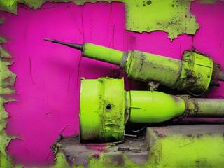
The weapons are Worms-crazy but grounded in military hardware, then punked up: multiple bazookas welded into one launcher, twenty shotguns taped into a bundle, cluster munitions, dirt bombs, airstrikes, homing missiles, a remote-steered hopping charge, a falling concrete slab, and super weapons at the top. Front Mission's wanzer arms and Lost Planet's mech weapons, multiplied.
Some weapons belong to a particular mecha; the rest live in a shared war chest any mecha can draw from. And the chest keeps changing, in the spirit of Reactorcore's supercores: weapons are found on the battlefield, taken along from the workshop, or captured from the enemy, and old ones run out of uses or break. Utility tools, like the blowtorch, drill and girder, sit alongside them.
As big as the weapon menu
Abilities
Beside the weapon grid is an ability grid of the same size, with XCOM-style options: overwatch, hunker down, double move, shields, toggled passives. Some have limited uses, some cool down, some switch on and off. Some belong to one mecha, others apply to the whole squad.
Enemy officers carry abilities too, inside cores in their machines. Take one intact, and it's yours.
A found family
The squad grows up
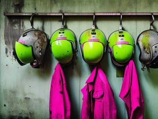
The Orphans are a persistent roster, as in XCOM and its police spinoff Chimera Squad: a rotating gang of pilots, each with their own mecha class (heavy, light, and everything between), who join, get promoted, get worn out and get hurt. A pilot whose mecha was knocked out ends up bruised in the infirmary for a battle or two; one who's run out of steam needs rest.
Nobody dies, so losing a battle is a setback, never a funeral. But time passes, and kids grow up. At eighteen each one chooses: retire into the workshop, the supply runs or the classroom, or become a legend pilot, better than any kid and mortal. Legends who fall go on the wall, and their names stay there.
What you can't see
Fog, smoke and tunnels
Each mecha reveals everything in a radius around it and sees along its line of sight beyond that, so the map is hidden in two ways: what's out of sight, and what's out of reach. Smoke and fog block the long view but clear close in.
Underground targets, buried bunkers and tunnels give the drill and the dirt bomb a job, and give the enemy places to hide.
Up to four sides
Brawls, mosh pits and monsters
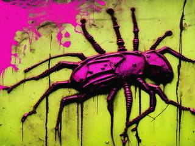
A battle can have up to four sides: the Orphans and up to three enemy factions, who fight each other as happily as they fight you. Besides the Hegemony there are the space monsters, each its own faction with its own units, structures and terrain: bug swarms, hive growths, rogue robots, mutants, zombies and cyborg skeletons. A faction can even split into rival copies of itself, recolored, like two players picking the same fighter in Smash Bros.
Sides start facing each other across the map, or are dropped in pods all over it, mosh-pit style, the way classic Worms scatters its teams. Theme packs reskin the battlefields with new textures, parallax backdrops and lighting, and some battles leave the ground entirely, in zero gravity.
Trivia
Nanomachines, son
The kids' invulnerability is a nod to Fallout 3, where children are essential characters and can't be killed. Reactorcore's note on how seriously to take all of this quotes Senator Armstrong from Metal Gear Rising: "Nanomachines, son." The tone is the 90s and 00s Saturday-morning cartoon, Teenage Mutant Ninja Turtles, Biker Mice from Mars, Swat Kats, where the heroes get captured, never killed, and the enemy's huge army is always somehow hopeless.
The aliens owe something to Macross: invaders who are cloned and have no children of their own, so it's never humans killing humans.
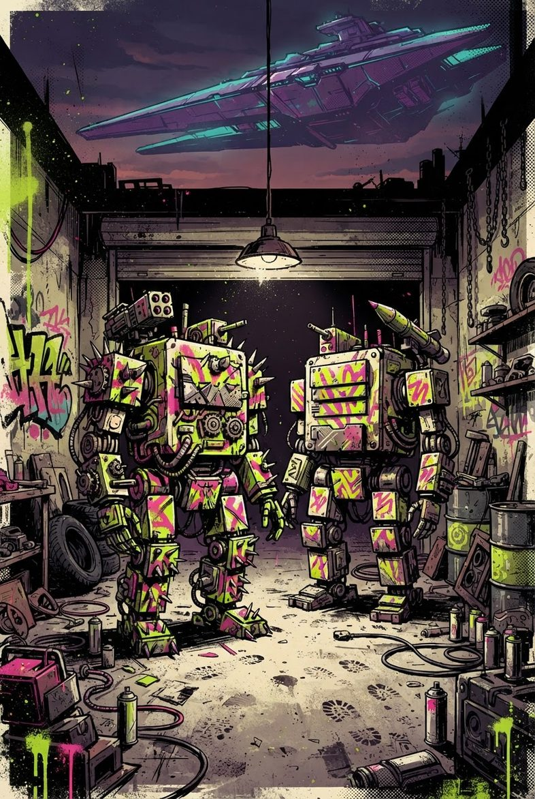
A flyer stapled to a wall
Titanium Punk Orphans: Turn-Based Mecha Artillery
Hey, Hegemony. You took our world. You took our parents. You forgot to take our garage.
We've got four mecha, a welder, a war chest and all the time in the world. You've got a fortress full of guns that jam. See you in the crater.